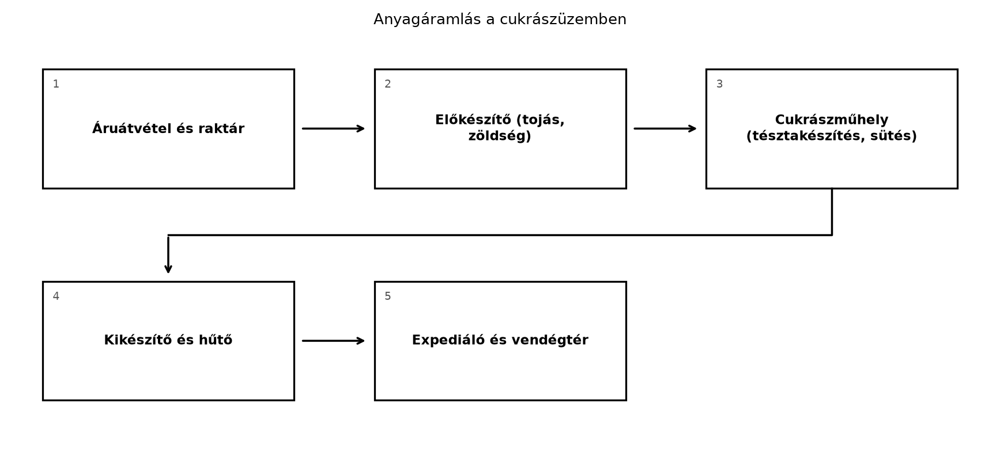
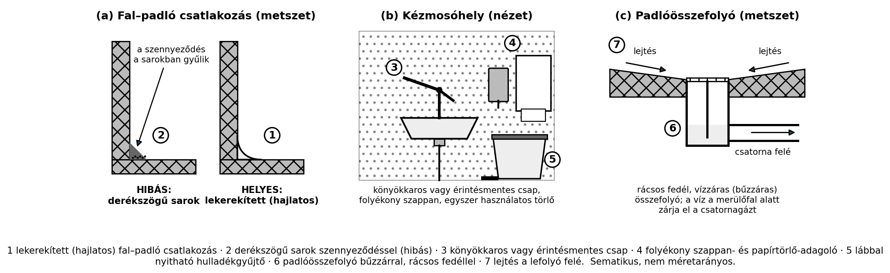

Képzeld el, hogy friss cukrászként átveszel egy régi, kis üzletet. Az első próbanapon azt látod, hogy a tojásfelütő asztal közvetlenül a kész tejszínes krém hűtője mellett áll, a mosogatóból a szennyezett edényeket a frissen sült tortalapok fölött viszik át, és a személyzeti WC ajtaja a műhelyre nyílik. A vendég ebből semmit nem lát, de a hiba olyan, mint a rejtett csőtörés: egyszer ételmérgezéses panasz vagy hatósági hiányosság lesz belőle.
Ebben az alfejezetben megtanulod, hogyan kell egy cukrászüzemet úgy kialakítani, hogy az anyagok útja egyirányú legyen, a tiszta és szennyezett övezet ne keveredjen, és a helyiségek moshatók, biztonságosak legyenek. Az itt tanult szemléletet használjuk a személyi higiénia mozgási szabályainál (Személyi higiénia és egészségügyi alkalmasság) és a cukrászüzem helyiségeinek üzemtani leírásánál (A cukrászüzem helyiségei és az üzletkörök).
Gondold végig egy torta útját: a nyersanyagok a raktárból indulnak, a tojást feltörik, a tésztát bekeverik, megsütik, a krémet megfőzik és lehűtik, a tortát összeállítják, díszítik, végül a vendég elé kerül. Minden lépésnek külön helye van. Az alábbi ábra ezt a vonalat mutatja; a feladat az, hogy ne legyen rajta hurok vagy kereszteződés.

A vonal az úgynevezett egyirányú anyagáramlás. Ha a szennyezett tojáshéj, a mosogatóvíz vagy a hulladék visszafelé, a késztermék felé tud mozogni, keresztszennyeződés alakul ki. Ezért a helyiségek kialakításánál nem elég a szép burkolat; a mozgások irányát is meg kell tervezni.
Definíció. Tiszta övezet
A cukrászüzemben a hőkezelt, csomagolt vagy már nem szennyezhető
termékekkel dolgozó terület, például a kikészítő, a hűtőkamra tiszta
része, az expediáló. Ide nyers tojás, mosatlan zöldség vagy szennyezett
eszköz nem kerülhet.
Definíció. Szennyezett övezet
Az a terület, ahol a nyersanyagok előkészítése, mosása, hámozása,
tojásfeltörés, hulladékkezelés vagy szennyezett edények mosogatása
folyik. A szennyezett övezetből a tiszta övezetbe csak kézmosás,
eszközfertőtlenítés vagy áruátadás után szabad belépni.
Definíció. Egyirányú anyagáramlás
Olyan térszervezési elv, amely szerint a nyersanyag, a félkész termék, a
késztermék, a csomagolóanyag és a hulladék útvonala előre meghatározott
irányban halad, és a tiszta termék útja nem keresztezi a szennyezett
anyag útját.
Szabály. Tiszta és szennyezett övezetek
szétválasztása
A nyersanyag-előkészítést, a mosogatást és a hulladéktárolást térben
vagy időben el kell választani a késztermék-készítéstől és -tárolástól.
Ha a hely nem teszi lehetővé a teljes fizikai elkülönítést, akkor a
munkafolyamatokat időben kell szétválasztani, és közben takarítani,
fertőtleníteni kell.
Jogszabály. Az élelmiszer-higiéniáról szóló 852/2004/EK rendelet (élelmiszer-higiénia) értelmében az élelmiszer-vállalkozónak biztosítania kell, hogy a helyiségek elrendezése, kialakítása, elhelyezkedése és mérete lehetővé tegye a megfelelő higiéniai gyakorlatot, és megelőzze a szennyeződést. A részletes műszaki követelményeket a NÉBIH jó higiéniai gyakorlat útmutatói és a Magyar Élelmiszerkönyv vonatkozó irányelvei fejtik ki (ellenőrizendő: hatályos NÉBIH-útmutatók és Magyar Élelmiszerkönyv előírások).
Jogszabály. A telepítésnél és a közműveknél az élelmiszer-vállalkozás helyét úgy kell megválasztani, hogy a környezet ne szennyezhesse az élelmiszert. Az ivóvízellátásnak és a szennyvízelvezetésnek meg kell felelnie a hatályos közegészségügyi előírásoknak (ellenőrizendő: hatályos ivóvíz- és szennyvíz-jogszabályok).
A cukrászüzem telepítésekor a következőket kell ellenőrizni:
Továbbvitt eredmény. Az itt leírt telepítési és közműkövetelmények alkotják az alapját a későbbi üzemfenntartási és takarítási feladatoknak (Takarítás, fertőtlenítés, mosogatás és hulladékkezelés), valamint a cukrászüzem helyiségeinek részletes üzemtani tárgyalásának (A cukrászüzem helyiségei és az üzletkörök).
A cukrászüzemben a helyiségeket a technológiai sorrend szerint kell kapcsolni. Az alábbi táblázat rendszerezi a legfontosabb helyiségeket és azok higiéniai feltételeit.
| Helyiség | Fő feladat | Kulcsfontosságú higiéniai feltétel |
|---|---|---|
| Áruátvételi rakodó | Nyersanyagok, csomagolóanyagok fogadása | Fedett, tiszta, a szállítóeszköztől elkülönített; azonnali ellenőrzés és betárolás |
| Szárazáru-raktár | Liszt, cukor, fűszerek, csomagolóanyagok tárolása | Száraz, hűvös, szellős; polcok, raklapok; talajtól és faltól távol |
| Hűtőkamrák/hűtők | Tej, tojás, vaj, tejszín, kész krémek tárolása | Külön hőmérsékleti zónák; hőmérő; nyers és késztermék elválasztása |
| Tojás-előkészítő | Tojás átvétele, vizsgálata, fertőtlenítése, feltörése | Külön helyiség vagy jól elhatárolt sarok; kézmosó; azonnali héjeltávolítás; a nyers tojástól védett tárolás |
| Zöldség- és gyümölcs-előkészítő | Mosás, hámozás, darabolás | Mosható felületek; külön mosogatómedence; ne legyen átjáró a tiszta övezetbe |
| Cukrászműhely | Tésztakészítés, krémfőzés, kikészítés | Világos, jól szellőztethető, mosható padló és fal; kézmosó; a munkafolyamatok egyirányú elrendezése |
| Sütő-kikészítő | Sütés, hűtés utáni összeállítás, díszítés | A sütőkből kiáramló hő és gőz elszívása; a késztermék védelme a portól |
| Fehér mosogató | Tiszta oldali eszközök (kikészítő tálak, habzsákok, díszítőeszközök); vendégtéri edények | A szennyezett edényektől elkülönítve; saját csepegtető és tisztaeszköz-tároló; ne legyen átjárás a szennyezett oldalról |
| Fekete mosogató | Szennyezett, zsíros, ételmaradékos, tojásos edények, tepsik, gépalkatrészek mosogatása és előmosása | A műhely szennyezett oldalán; kézmosó; zsírfogó; a tiszta eszközöktől elkülönítve |
| Vendégtér | Fogyasztás, értékesítés | A termelőtértől ajtóval vagy átadóablakkal elválasztva; saját vendég-WC és kézmosó |
| Szociális helyiségek | Öltöző, zuhanyzó, személyzeti WC | A műhelyből nem nyílhatnak közvetlenül; előtér, zsilip, kézmosó; az utcai ruha elkülönítése |
Tojás-előkészítő kiemelten. A nyers tojás az egyik legnagyobb mikrobiológiai kockázat a cukrászatban. Ezért a tojás feltörését mindig el kell választani a kész krémektől, a tejszínes töltelékektől és a díszítőműveletektől. A tojás-előkészítő legyen könnyen tisztítható, saját kézmosóval, és a feltört tojást lefedve, hűtve kell tárolni.
Mosogatók. A fekete mosogató a szennyezett oldal zsíros, ételmaradékos, tojásos edényeinek (tepsik, üstök, tojásos tálak, gépalkatrészek) mosogatására szolgál; a fehér mosogató a tiszta oldal eszközeinek – kikészítő tálak, habzsákok, díszítőeszközök –, vendéglátó üzletben a vendégtéri étkezési edények (tányér, pohár, evőeszköz) mosogatására. A mosogatott eszközöket a tiszta oldalon, fedetten kell tárolni. A kettőt nem szabad felcserélni, és a szennyezett edényeket nem szabad a tiszta eszközök tárolója fölött átvinni.
A helyiségek belső felületeinek megválasztása nem esztétikai kérdés, hanem élelmiszerbiztonsági feltétel.
| Felület/elem | Követelmény | Miért fontos a cukrászatban |
|---|---|---|
| Padló | Vízhatlan, mosható, csúszásmentes, a lefolyók felé lejtő, repedésmentes | A cukor, liszt, tojás, tejszín keveréke csúszós; a repedésekben baktériumok telepednek meg |
| Fal | A munkaterület magasságáig sima, mosható, világos, vízálló; a sarkok lekerekítettek | A krémfröccsenés, a lisztpor és a pára letörölhető legyen, és ne maradjon penész |
| Mennyezet | Páramentes, könnyen tisztítható, nem pereghet vakolat | A gőz lecsapódása penészt okozhat; a vakolatdarab nem eshet az élelmiszerbe |
| Világítás | Természetes fény előnyben; mesterséges fénynél védőburával ellátott lámpatestek | Egy törött neoncső szilánkja a munkafelületre hullva szennyezheti a terméket |
| Szellőzés | Pára- és szagelszívás; a sütő és a mosogató fölött hatékony elszívás; szűrők tisztíthatók | A pára lecsapódik, a szagok átjárják a krémet, a penészgomba elszaporodik |
| Kézmosó | Meleg folyóvíz, folyékony szappan, egyszer használatos törlő; lehetőleg láb- vagy térdműködtetésű csaptelep; a munkaterülettől néhány lépésre | A kézmosás a leghatékonyabb keresztszennyeződés-megelőzés; ha nehéz elérni, kimarad |
A kézmosók számát a dolgozói létszámhoz és a technológiához kell igazítani. Gyakorlati irányelvként minden 5–8 dolgozóra legalább egy, a munkaterülettől legfeljebb néhány méterre lévő kézmosót érdemes tervezni (ellenőrizendő: hatályos jó higiéniai gyakorlat útmutató). A kézmosónál mindig legyen kézfertőtlenítő szer is, különösen a tojásfeltörés és a nyers hús előkészítése után.
Az alábbi részletrajzok megmutatják, hol tapad meg a szennyeződés: a derékszögű fal–padló sarokban (a hajlatos csatlakozás könnyen tisztítható), a kézzel nyitható csapon (helyette könyökkaros vagy érintésmentes csap, szappan- és papírtörlő-adagoló, lábbal nyitható gyűjtő), illetve a lefolyónál (a padló lejt az összefolyó felé, amelyet rács fed és bűzzár zár).

Példa. Az alábbi alaprajzot kell ellenőrizned egy átvételre váró kis cukrászüzemben:
A bal oldali alaprajz a fenti leírást rajzolja meg a három útvonallal (késztermék folytonos, szennyezett edény szaggatott, hulladék pontozott vonal); a jobb oldali a lent következő javító intézkedések utáni állapot. A HTML-kiadásban az útvonalak lépésenként jeleníthetők meg.
Ellenőrzés lépései:
Javító intézkedések:
Ez a példa mutatja, hogy az alaprajz ellenőrzése nem rajzfeladat, hanem higiéniai döntések sorozata.
| Hiba | Ok | Megelőzés/Javítás |
|---|---|---|
| A személyzeti WC ajtaja közvetlenül a műhelybe nyílik. | A tervezéskor nem gondoltak a szennyezett övezet elválasztására. | Tervezz előteret vagy zsilipet; az ajtó kifelé nyíljon, és legyen kézmosó az előtérben. Utólagos átalakítással is javítható. |
| A tojás-előkészítőben nincs kézmosó, a dolgozó a műhely kézmosóját használja. | Hiányos kialakítás; a lépésszám csökkentésére törekedtek. | Minden szennyezett övezetben legyen kézmosó. Javítás: mobil kézmosó vagy vezeték kiépítése. |
| A padló csúszós, a fugákban penész látható. | Nem vízhatlan, nem csúszásmentes burkolatot választottak, vagy nincs megfelelő takarítás. | Válassz vízhatlan, csúszásmentes, repedésmentes padlót. A sérült fugákat azonnal javítsd, a takarítást nedves-fertőtlenítő módszerrel végezd. |
| A világítótestek nincsenek védőburával. | A tervezésnél spóroltak a lámpatesteken. | Minden élelmiszer feletti lámpát szerelj fel védőburával. Egy törött fénycső esetén azonnal állítsd le a munkát, és selejtezd az érintett tételt. |
| A fekete mosogató a tisztaeszköz-raktár mellett van, a szennyezett edényeket a tiszta eszközök fölött viszik át. | Az anyagáramlást nem tervezték meg. | Helyezd a fekete mosogatót a szennyezett oldalra, a tisztaeszköz-tárolót a tiszta oldalra; a kettő között ne legyen átjárás. |
Egy kisvárosi cukrászda hatósági ellenőrzése során az ellenőr felhívta a figyelmet arra, hogy a tojásfeltörő asztal a kész tejszínes krém hűtője mellett van, és a feltört tojást ugyanazon a pulton kezelik, ahol később a kész tortalapokat töltik. A vállalkozó először csak a hűtő áthelyezését tervezte, de az ellenőrzési jegyzőkönyv alapján átgondolta a teljes alaprajzot.
Az átalakítás során a bejáratnál alakítottak ki egy kis átvételi-ellenőrző sarkot. A raktárból külön tojás-előkészítőt választottak le saját kézmosóval. A tésztakészítő és a sütő a műhely egyik végébe került, a kikészítő és a hűtő a másikba. A fekete mosogatót a szennyezett oldalon, a fehér mosogatót a tiszta oldalon helyezték el, és a személyzeti WC elé előteret építettek. A hulladékot a műhely hátsó ajtaján, a termelési vonalat nem keresztezve viszik ki.
Az eredmény nem csupán a hatósági megfelelés lett: a dolgozók kevesebbet mozognak, a krémek és a nyers tojás útja nem találkozik, és a napi takarítás is gyorsabb. A panaszok száma csökkent, és a műhelyben érezhetően tisztább a levegő.
1. feladat (A). Határozd meg saját szavaiddal a tiszta övezet és a szennyezett övezet fogalmát! Adj mindkettőre egy-egy cukrászati példát.
2. feladat (A). Sorold fel a cukrászüzem legalább hat különböző helyiségét, és mindegyikhez írj egy-egy lényeges higiéniai követelményt!
3. feladat (B). Rajzolj le egy egyszerű, fiktív cukrászüzem alaprajzát az alábbi elemekkel: áruátvétel, szárazraktár, hűtő, tojás-előkészítő, műhely sütővel, kikészítő, fehér mosogató, fekete mosogató, expediáló, személyzeti WC. Jelöld be nyilakkal az anyagáramlást, és ellenőrizd, hogy nincs-e kereszteződés!
4. feladat (B). Egy meglévő üzemben a fekete mosogató a kikészítő mellett van, a személyzeti WC ajtaja a műhelybe nyílik, és a hulladékot a kikészítőn át viszik ki. Nevezz meg három konkrét keresztszennyeződési kockázatot, és javasolj egy-egy beavatkozást!
5. feladat (C). Tervezz átalakítást a 4. feladat üzeméhez. Hogyan szerveznéd át a helyiségek kapcsolatát úgy, hogy az anyagáramlás előrehaladó legyen, és a tiszta–szennyezett övezetek ne keveredjenek? Indokold a változtatásokat!
6. feladat (D). Válassz egy valós vagy elképzelt kis cukrászüzemet. Készítsd el a helyiségek jegyzékét, becsüld meg a munkafolyamatok irányát, és ellenőrizd az alaprajzot a fenti szempontok szerint. Készíts egy rövid ellenőrző táblázatot: helyiség, övezet (tiszta/szennyezett), fő kockázat, szükséges intézkedés.
Önellenőrzés – válaszok
1. feladat.
Tiszta övezet: a hőkezelt, már nem szennyezhető termékekkel foglalkozó
terület, például a kikészítő, ahol a megsült tortalapokat töltik és
díszítik. Szennyezett övezet: a nyersanyag-előkészítés területe, például
a tojásfeltörő vagy a mosogató, ahol a nyers tojás, a mosatlan zöldség
vagy a szennyezett edények találhatók.
2. feladat.
Például: áruátvételi rakodó (fedett, tiszta), szárazáru-raktár (száraz,
hűvös, polcos), hűtőkamra (hőmérő, nyers/késztermék szétválasztás),
tojás-előkészítő (külön helyiség, kézmosó), cukrászműhely (mosható
felületek, kézmosó), fehér mosogató (csak tiszta eszközök), fekete
mosogató (szennyezett oldal), szociális helyiség (zsilip, kézmosó). A
válaszban legalább hat helyiség szerepeljen.
3. feladat.
A rajz akkor jó, ha az áruátvételből a raktárba, onnan az előkészítőkbe,
majd a műhelybe, a kikészítőbe és az expediálóba mutató nyilak előre
haladnak; a fekete mosogató a szennyezett oldalon, a fehér mosogató a
tiszta oldalon szerepel, és a személyzeti WC nem a műhelyből nyílik. A
tanuló ellenőrizheti, hogy a hulladék útja nem keresztezi a késztermék
útját.
4. feladat.
Kockázatok és beavatkozások:
- A fekete mosogató a kikészítő mellett van: a szennyezett edényekről
csepegő víz vagy ételmaradék a késztermékre fröccsenhet. Javítás: a
fekete mosogatót a szennyezett oldalra kell helyezni.
- A WC a műhelyből nyílik: a WC-ből kilépő dolgozó szennyezett ruhája,
cipője, keze a tiszta övezetbe jut. Javítás: előtér, zsilip,
kézmosó.
- A hulladékot a kikészítőn át viszik: a hulladékból kórokozók és
szennyeződés kerülhet a késztermék közelébe. Javítás: külön hulladékút,
vagy a termelés szünetében, fedett edényben való elszállítás.
5. feladat.
Javasolt átalakítás: a bejáratnál áruátvétel és ellenőrzés; a raktárból
jobbra tojás-előkészítő, balra zöldség-előkészítő; a műhely középen, a
sütő a műhely hátsó részén; a kikészítő a műhelyből egyirányú ajtón át
nyílik; a késztermék-hűtő és expediáló a kikészítőből; a fekete mosogató
a szennyezett oldalon, a fehér mosogató a tiszta oldalon; a személyzeti
WC a szociális blokkban, előtérrel, nem a műhelyből nyílik; a hulladék a
hátsó kijáraton, a termelési vonalat elkerülve távozik. Az indoklásban
ki kell térni a tiszta–szennyezett övezetek elválasztására.
6. feladat.
A táblázatnak tartalmaznia kell minden helyiséget, az övezet besorolást,
a fő kockázatot (pl. tojás a kész krém mellett, WC a műhelyben) és a
szükséges intézkedést (pl. áthelyezés, zsilip, kézmosó kiépítése). A
tanuló értékelje a saját alaprajzát, és indokolja a javaslatokat.
A cukrászüzem kialakításánál a legfontosabb elv az egyirányú anyagáramlás: a nyersanyagok a beszállítástól az előkészítésen, a műhelyen, a kikészítőn át az expediáló felé haladnak, és soha nem keresztezik a hulladék, a szennyezett edények vagy a személyzeti forgalom útját. A tiszta övezet (kikészítő, hűtő, expediáló) és a szennyezett övezet (előkészítők, fekete mosogató, WC) térben vagy időben elválasztandó. A tojás-előkészítőt kiemelten, saját kézmosóval kell kialakítani, mert a nyers tojás az egyik legnagyobb mikrobiológiai kockázat. A felületek legyenek simák, moshatók, vízhatlanok; a padló csúszásmentes, a világítás védőburás, a szellőzés pára- és szagelszívó. Minden munkaterület közelében legyen meleg folyóvízű kézmosó folyékony szappannal és egyszer használatos törlővel. Az itt tanult egyirányúságot és helyiségkapcsolatokat használjuk fel a személyi higiénia mozgási szabályainál (Személyi higiénia és egészségügyi alkalmasság) és a cukrászüzem helyiségeinek üzemtani leírásánál (A cukrászüzem helyiségei és az üzletkörök).
Felhasznált forrástípusok: az élelmiszer-higiéniáról szóló 852/2004/EK rendelet; a NÉBIH jó higiéniai gyakorlat útmutatói; a Magyar Élelmiszerkönyv vendéglátásra vonatkozó irányelvei; a hatályos ivóvíz- és szennyvízjogi előírások. A szövegben jelzett ellenőrzési pontok: a helyiségekre, felületekre, kézmosók számára vonatkozó konkrét műszaki követelményeket a hatályos NÉBIH-útmutatók és a Magyar Élelmiszerkönyv alapján kell pontosítani; az ivóvíz- és szennyvíz-jogszabályok aktuális rendeletszámait és határértékeit ellenőrizni kell; a kézmosók számára adott „5–8 fő/kézmosó” gyakorlati irányelv tájékoztató jellegű, és a hatályos útmutató szerint pontosítandó.